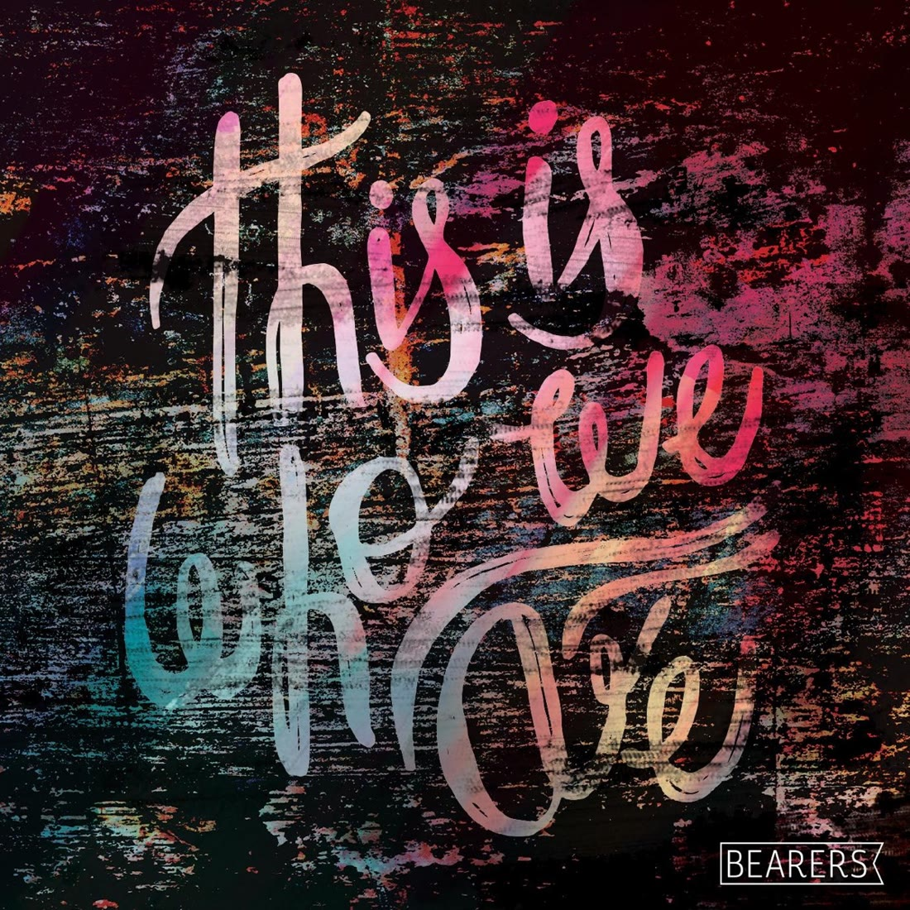

Case /07 Selected work← All work
Bearers
/ The brief
At the Army’s Amplify creative arts camps, the same thing kept surfacing: young songwriters with real songs and nowhere to take them. Bearers became the platform, worship written by the movement’s own young people, in their own sound.
/ The approach
Conceived and produced from inside The Salvation Army’s Creative Ministries Department. Six young Salvationist writers got in the room together, and the songs kept circling one theme: identity. The result was the five-track EP This Is Who We Are, an upbeat pop-rock record made to travel beyond the Army’s own walls, launched live at the Now is the Time congress in Wellington. Two more records followed, the Defined EP and then the full-length album Home in 2018.
- Project concept & A&R
- Co-writing with six young writers
- Production, recording & release
- Live launch at a national congress

/ The outcome
- Three records
- This Is Who We Are (2016), the Defined EP, and the album Home (2018)
- Six writers platformed
- Young Salvationists wrote and fronted the record themselves
- Launched live
- Premiered at the Now is the Time congress, Wellington
“It was untapped potential out there that needed a platform.”